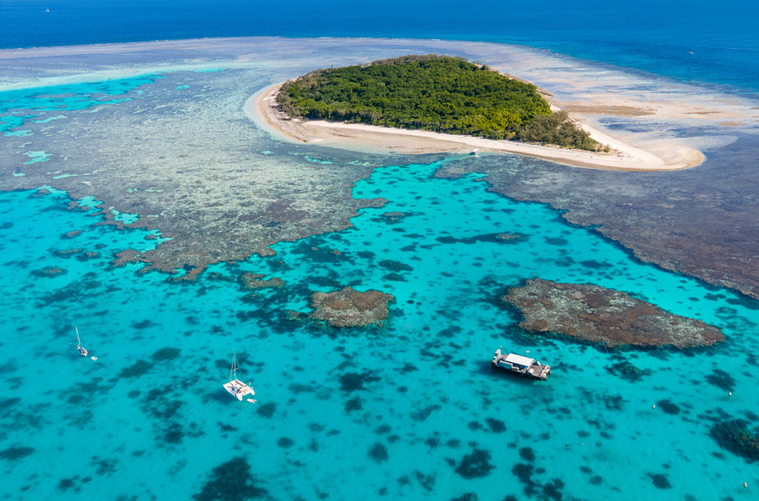

Keajaiban Alam: Great Barrier Reef
Great Barrier Reef adalah sistem terumbu karang terbesar di dunia, membentang sejauh lebih dari 2.300 kilometer di sepanjang pantai timur Australia. Terumbu karang ini terdiri dari jutaan polip karang individu yang hidup bersama dalam simbiosis dengan ganggang fotosintesis. Great Barrier Reef adalah rumah bagi berbagai macam kehidupan laut, termasuk ikan, hiu, penyu, dan terumbu karang.

Sayangnya, Great Barrier Reef menghadapi berbagai ancaman, termasuk perubahan iklim, polusi, dan penangkapan ikan berlebihan. Sangat penting untuk melindungi terumbu karang ini untuk menjaga keanekaragaman hayati laut dan keindahan alam.